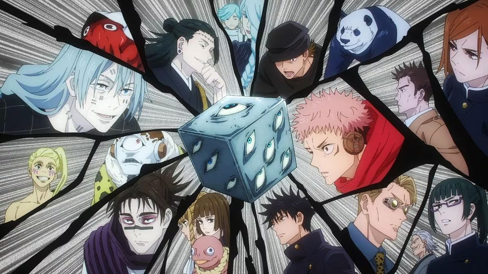
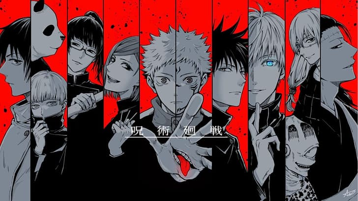

Enredo do Anime
postado em 17 de setembro

Jujutsu Kaisen é uma jornada épica que começa com Yuji Itadori, um estudante colegial comum que tem sua vida transformada após um encontro fatídico com o sobrenatural. Quando Yuji acidentalmente liberta uma terrível maldição contida em um artefato amaldiçoado, ele se vê imerso em um mundo de trevas e perigo. Determinado a proteger aqueles que ama, Yuji acaba ingerindo um artefato amaldiçoado que era parte do corpo de Sukuna, a mais forte maldição que já existiu, o que acaba lhe transformando num usuário de jujutsu, uma forma de combate espiritual que usa energia amaldiçoada para enfrentar maldições e entidades malignas. Com a orientação do enigmático professor Satoru Gojo, Yuji se junta a outros usuários de jujutsu, incluindo Megumi Fushiguro e Nobara Kugisaki, em uma missão para salvar a humanidade do caos iminente.

Lista de Personagens - Jujutsu Kaisen
- Tokyo Jujutsu High
- Faculdade
- Masamichi Yaga
- Satoru Gojo
- Atsuya Kusakabe
- Kiyotaka Ijichi
- Shoko Ieiri
- Akari Nitta
- Alunos do 1º Ano
- Yuji Itadori
- Megumi Fushiguro
- Nobara Kugisaki
- Alunos do 2º Ano
- Maki Zenin
- Toge Inumaki
- Panda
- Yuta Okkotsu
- Alunos do 3º Ano
- Kinji Hakari
- Kirara Hoshi
- Faculdade
- Kyoto Jujutsu High
- Faculdade
- Yoshinobu Gakuganji
- Utahime Iori
- Alunos do 1º Ano
- Arata Nitta
- Alunos do 2º Ano
- Mai Zenin
- Kokichi Muta
- Kasumi Miwa
- Alunos do 3º Ano
- Noritoshi Kamo
- Aoi Todo
- Momo Nishimiya
- Faculdade
- Jujutsu Sorcerers
- Kento Nanami
- Takuma Ino
- Mei Mei
- Yuki Tsukumo
- Master Tengen
- Família Zenin
- Naobito Zenin
- Naoya Zenin
- Ogi Zenin
- Ranta Zenin
- Jinichi Zenin
- Chojuro Zenin
- Nobuaki Zenin
- Família Kamo
- Pai de Noritoshi
- Shino
- Jogadores do Culling Game
- Hajime Kashimo
- Hana Kurusu
- Hiromi Higuruma
- Fumihiko Takaba
- Rin Amai
- Hanyu
- Haba
- Yorozu
- Reggie Star
- Remi
- Iori Hazenoki
- Chizuru Hari
- Dhruv Lakdawalla
- Ryu Ishigori
- Takako Uro
- Charles Bernard
- Hagane Daido
- Rokujushi Miyo
- Não Combatentes
- Riko Amanai
- Misato Kuroi
- Ui Ui
- Cursed Spirits (Espíritos Amaldiçoados)
- Special Grades Não Registrados
- Mahito
- Jogo
- Hanami
- Dagon
- Vengeful Spirits (Espíritos Vingativos)
- Cursed Rika
- Kuchisake-Onna
- Cursed Naoya
- Special Grades Registrados
- Tamamo-no-Mae
- Smallpox Deity
- Kurourushi
- Ganesha
- Akuro-o Otake
- Cursed Womb: Death Paintings (Pinturas da Morte)
- Choso
- Eso
- Kechizu
- Outras Maldições
- Maldição de Roppongi
- Maldições sem nome
- Finger Bearers
- Fly Heads
- Ko-Guy
- Inventory Curse
- Sting-Ray Curse
- Rainbow Dragon
- Rika
- Special Grades Não Registrados
- Curse Users (Usuários de Maldições)
- Grupo Original de Suguru Geto
- Suguru Geto
- Mimiko Hasaba
- Nanako Hasaba
- Miguel
- Larue
- Manami Suda
- Toshihisa Negi
- Aliança de Sukuna & Kenjaku
- Sukuna
- Kenjaku
- Uraume
- Juzo Kumiya
- Haruta Shigemo
- Niji Ebina
- Jiro Awasaka
- Ogami
- Neto de Ogami
- Q
- Bayer
- Kokun
- Outros Usuários de Maldições
- Junpei Yoshino
- Noritoshi Kamo (Antigo)
- Usuários de Maldições sem nome
- Grupo Original de Suguru Geto
- Non-Sorcerers (Não Feiticeiros)
- Estudantes
- Setsuko Sasaki
- Takeshi Iguchi
- Shota Ito
- Tsumiki Fushiguro
- Yuko Ozawa
- Fumi
- Civis
- Wasuke Itadori
- Rika Orimoto
- Criança sem nome
- Nagi Yoshino
- Takada-chan
- Takagi
- Tadashi Okazaki
- Mãe de Tadashi
- Estudantes